1008A44 rear rigid mount - r r
- Path
- Procedures > 10 ENGINE > 1008 POWER UNIT SUPPORTS > 1008A power unit fastenings > 1008A44 rear rigid mount - r r
- Kind
- repair procedure (removal / refitting; the operation number is the code)
- Applies to
- engines: 1.6 TS , 1.8 TS, 2.0 JTS, 2.5 V6, 3.2 V6, 1.9 JTD 8v , 1.9 JTD 16v, 2.0 JTS, 2.4 JTD 10v, 2.4 JTD 20v; all production periods
- Interactive page
- https://sloeber94.github.io/elrnDB-a156/en/#/3237446
Applies to: engines: 2.5 V6, 3.2 V6; all production periods
 Removing
Removing
 Refitting
RefittingRemove the vehicle from the ramp.
7055B54 under-engine guard - r r
1076B52 exhaust pipe (one) leaving l/h or r/h exhaust manifold - r + r
Position a hydraulic jack under the engine.
1. Undo the bolts (1a) and (1b), then remove the rigid rear support for the power unit (1c).
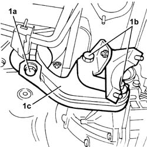
Applies to: engines: 2.5 V6, 3.2 V6; all production periods
Refitting
Removing1. Fit the rigid rear support for the power unit (1a) and fix it tightening the bolts (1b) and (1c) to the recommended torque.
 | Fastening | Component | Ø | Value (daNm) |
|---|---|---|---|---|
1b | Bolt | POWER UNIT RIGID REAR MOUNT | M12 | 8.8 |
| Fastening | Component | Ø | Value (daNm) |
|---|---|---|---|---|
1c | Bolt | POWER UNIT RIGID REAR MOUNT | M16 | 10.2 - 12.6 |
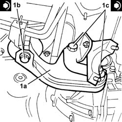
Applies to: engines: 2.5 V6, 3.2 V6; all production periods
Remove the hydraulic jack from under the engine.
1076B52 exhaust pipe (one) leaving l/h or r/h exhaust manifold - r + r
7055B54 under-engine guard - r r
Remove the vehicle from the ramp.
Applies to: engines: 1.6 TS , 1.8 TS; all production periods
Removing
RefittingPosition the vehicle on the ramp.
7055B54 under-engine guard - r r
1076A32 exhaust rigid mount - r r
1076B50 exhaust pipe attachment to engine - r + r
Position a hydraulic jack under the engine.
1. Undo the nut (1a) and the bolt (1b) and remove the rod (1c).
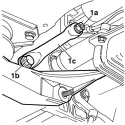
Applies to: engines: 1.6 TS , 1.8 TS; all production periods
1. Undo the bolts (1a) and remove the power unit rigid rear support (1b).
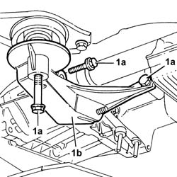
Applies to: engines: 1.6 TS , 1.8 TS; all production periods
Refitting
RemovingFit the rigid rear support for the power unit and fix it to the gearbox tightening the bolts to the recommended torque.
| Fastening | Component | Ø | Value (daNm) |
|---|---|---|---|---|
- | Bolt | POWER UNIT RIGID REAR MOUNT | M12 | 7.5 ÷ 9.2 |
Tighten the bolt fixing the power unit rigid rear support to the flexible mounting to the recommended torque.
| Fastening | Component | Ø | Value (daNm) |
|---|---|---|---|---|
- | Bolt | POWER UNIT RIGID REAR MOUNT | M12 | 7.5 ÷ 9.2 |
Fit the rod and fix it tightening the bolt and the nut to the recommended torque.
| Fastening | Component | Ø | Value (daNm) |
|---|---|---|---|---|
- | Bolt | POWER UNIT RIGID REAR SUPPORT REINFORCEMENT ROD.... | M12 | 7.2 ÷ 9.2 |
| Fastening | Component | Ø | Value (daNm) |
|---|---|---|---|---|
- | Nut | POWER UNIT RIGID REAR SUPPORT REINFORCEMENT ROD.... | M12 | 2.7 ÷ 3.4 |
Remove the hydraulic jack from under the engine.
1076B50 exhaust pipe attachment to engine - r + r
1076A32 exhaust rigid mount - r r
7055B54 under-engine guard - r r
Remove the car from the ramp.
Applies to: engines: 1.6 TS , 1.8 TS; all production periods; only with equipment: Euro 3
Removing
RefittingPosition the vehicle on the ramp.
Ensure that the ignition key is in the stop OFF, then disconnect the battery negative terminal.
 | Name | Connector |
|---|---|---|
- | Battery |
Proceed with the removal 1072C44 exhaust manifold heat shield on bulkhead - r+r .
Proceed with the removal 7055B54 under-engine guard - r r .
Proceed with the removal 1080B40 catalytic pre-converter - r r .
1. Undo the bolts (1a) and remove the exhaust pipe rigid mount (1b).
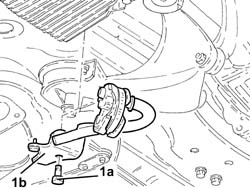
Applies to: engines: 1.6 TS , 1.8 TS; all production periods; only with equipment: Euro 3
1. Undo the nut (1a) and the bolt (1b), then remove the link (1c).
2. Undo the bolts (2a), (2b) and the nut (2c), then remove the power unit rigid rear support (2d).
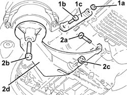
Applies to: engines: 1.6 TS , 1.8 TS; all production periods; only with equipment: Euro 3
Refitting
Removing1. Refit the gearbox side power unit rear rigid support reinforcement (1a) in its seating and secure by tightening the bolts (1b) and (1d) and the nut (1c) to the recommended torque.
| Fastening | Component | Ø | Value (daNm) |
|---|---|---|---|---|
1b | Bolt | POWER UNIT RIGID REAR MOUNT | M12 | (Crankcase sump side) 7.5 ÷ 9.2 |
| Fastening | Component | Ø | Value (daNm) |
|---|---|---|---|---|
1c | Nut | POWER UNIT RIGID REAR MOUNT | M12 | (Gearbox side) 7.5 ÷ 9.2 |
| Fastening | Component | Ø | Value (daNm) |
|---|---|---|---|---|
1d | Bolt | POWER UNIT RIGID REAR MOUNT | M12 | (Flexible mounting side) 7.5 ÷ 9.2 |
2. Refit the rod (2a) and tighten the nut (2b) and the bolt (2c) to the recommended torque.
| Fastening | Component | Ø | Value (daNm) |
|---|---|---|---|---|
2b | Nut | POWER UNIT RIGID REAR SUPPORT REINFORCEMENT ROD.... | M12 | (Gearbox side) 2.7 ÷ 3.4 |
| Fastening | Component | Ø | Value (daNm) |
|---|---|---|---|---|
2c | Bolt | POWER UNIT RIGID REAR SUPPORT REINFORCEMENT ROD.... | M12 | (Gearbox side) 7.2 ÷ 9.2 |
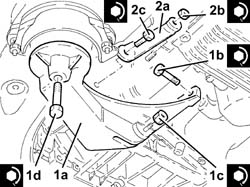
Applies to: engines: 1.6 TS , 1.8 TS; all production periods; only with equipment: Euro 3
Place the exhaust pipe rigid support back in its housing and secure it using the bolt.
Proceed with the refitting 1080B40 catalytic pre-converter - r r .
Proceed with the refitting 7055B54 under-engine guard - r r .
Proceed with the refitting 1072C44 exhaust manifold heat shield on bulkhead - r+r .
Connect the battery terminal (-).
Remove the car from the ramp.
Applies to: engines: 2.0 JTS, 2.0 JTS; all production periods
Removing
RefittingPosition the vehicle on the ramp.
Ensure that the ignition key is in OFF position, then disconnect the negative battery terminal.
| Name | Connector |
|---|---|---|
- | Battery |
Drain the air conditioner coolant circuit 5040A10 Air conditioning refrigerant CIRCUIT - Draining and Refilling .
Proceed with removal 4450B04 right front wheel r r .
Proceed with removal 7055B54 under-engine guard - r r .
Proceed with removal 5040A20 air conditioner compressor - r+r - includes fluid level check and top up if necessary .
Proceed with removal 5040A26 compressor mount - r r .
Proceed with removal 1016A40 ignition coil cover on cylinder head- r+r .
Proceed with removal 1076A48 catalytic converter heat shield - r r .
Proceed with removal 1080B62 catalytic converter - r + r .
1. Undo the bolt fixing the rigid pipe support collar for the exhaust pipe between the catalytic converter and the silencer to the bracket.
2. Undo the bolts (2a) and remove the rigid pipe for the exhaust pipe between the catalytic converter and the silencer (2b).
3. Remove the gasket.
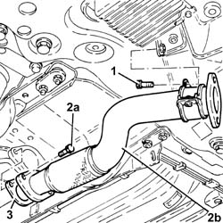
Applies to: engines: 2.0 JTS, 2.0 JTS; all production periods
1. Undo the bolt (1a) and the nut (1b), then remove the exhaust pipe support (1c).
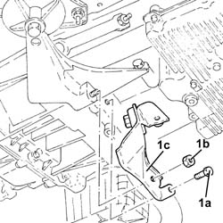
Applies to: engines: 2.0 JTS, 2.0 JTS; all production periods
Position a hydraulic jack under the motor.
1. Undo the bolt (1a) and nut (1b) and remove the reinforcing link (1c).
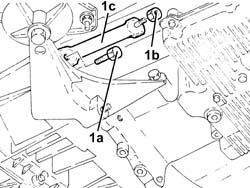
Applies to: engines: 2.0 JTS, 2.0 JTS; all production periods
1. Undo the bolts (1a) and remove the power unit rigid rear support (1b).
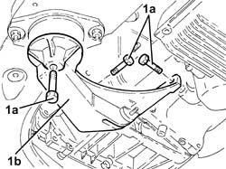
Applies to: engines: 2.0 JTS, 2.0 JTS; all production periods
Refitting
Removing1. Refit the power unit rigid rear support (1a) in its seating and secure by tightening the bolts (1b) (1c) and (1d) to the recommended torque.
| Fastening | Component | Ø | Value (daNm) |
|---|---|---|---|---|
1b | Bolt | POWER UNIT RIGID REAR MOUNT | M12 | (Gearbox side) 6.8 ÷ 8.3 |
| Fastening | Component | Ø | Value (daNm) |
|---|---|---|---|---|
1c | Bolt | POWER UNIT RIGID REAR MOUNT | M12 | (Engine oil sump side) 6.8 ÷ 8.3 |
| Fastening | Component | Ø | Value (daNm) |
|---|---|---|---|---|
1d | - | - | - | - |
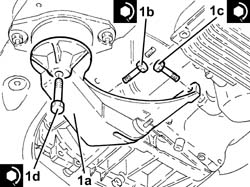
Applies to: engines: 2.0 JTS, 2.0 JTS; all production periods
1. Place the reinforcement rod (1a) in its housing and secure it by tightening the bolt (1b) and the nut (1c) to the recommended torque.
| Fastening | Component | Ø | Value (daNm) |
|---|---|---|---|---|
1b | Bolt | POWER UNIT REAR RIGID SUPPORT REINFORCEMENT ROD.... | M12 | 6.8 ÷ 8.3 |
| Fastening | Component | Ø | Value (daNm) |
|---|---|---|---|---|
1c | Nut | POWER UNIT REAR RIGID SUPPORT REINFORCEMENT ROD.... | M12 | 5.0 ÷ 6.1 |
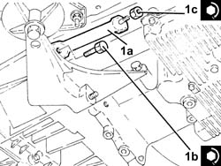
Applies to: engines: 2.0 JTS, 2.0 JTS; all production periods
Remove the hydraulic jack from beneath the engine
1. Fit the support for the pipe (1a) and secure by tightening the bolt (1b) and the nut (1c) to the specified torque.
| Fastening | Component | Ø | Value (daNm) |
|---|---|---|---|---|
1b | Bolt | EXHAUST PIPE RIGID MOUNT | M8 | 2.3 ÷ 2.8 |
| Fastening | Component | Ø | Value (daNm) |
|---|---|---|---|---|
1c | Nut | EXHAUST PIPE RIGID MOUNT | M12 | 6.8 ÷ 8.3 |
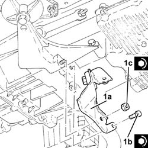
Applies to: engines: 2.0 JTS, 2.0 JTS; all production periods
1. Place the rigid pipe for the exhaust pipe between the catalytic converter and the silencer (1a), complete with gasket (1b), back in its housing and fasten it to the front exhaust silencer by tightening the bolts (1c) to the recommended torque.
| Fastening | Component | Ø | Value (daNm) |
|---|---|---|---|---|
1c | Bolt | RIGID EXHAUST PIPE | M10 | (Front silencer side) 5.9 ÷ 7.2 |
2. Tighten the bolt fixing the support collar for the rigid pipe for the exhaust pipe between the catalytic converter and silencer to the bracket.
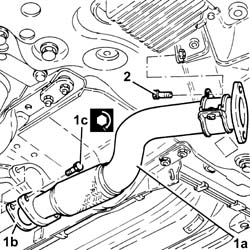
Applies to: engines: 2.0 JTS, 2.0 JTS; all production periods
Proceed with refitting 1080B62 catalytic converter - r + r .
Proceed with refitting 1076A48 catalytic converter heat shield - r r .
Proceed with refitting 1016A40 ignition coil cover on cylinder head- r+r .
Proceed with refitting 5040A26 compressor mount - r r .
Proceed with refitting 5040A20 air conditioner compressor - r+r - includes fluid level check and top up if necessary .
Proceed with refitting 7055B54 under-engine guard - r r .
Proceed with refitting 4450B04 right front wheel r r .
Fill the air conditioner coolant circuit 5040A10 Air conditioning refrigerant CIRCUIT - Draining and Refilling .
Connect the negative (-) battery terminal.
Remove the car from the ramps.
Applies to: engines: 1.9 JTD 8v ; all production periods
Removing
RefittingPosition the vehicle on the ramp.
Position a hydraulic jack under the manual gearbox differential.
1. Undo the nut (1a) and bolt (1b) and remove the power unit rear rigid mount (1c).
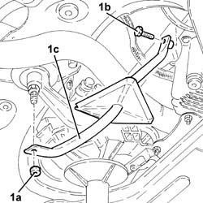
Applies to: engines: 1.9 JTD 8v ; all production periods
1. Undo the nut fixing the rear power unit rigid support to the flexible mounting.
2. Undo the bolts (2a) and remove the power unit rigid rear mounting (2b).
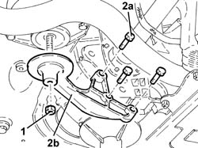
Applies to: engines: 1.9 JTD 8v ; all production periods
Refitting
Removing1. Refit the power unit rear rigid support (1a) in its seating and secure to the differential by tightening the bolts (1b) and (1c) to the specified torque.
| Fastening | Component | Ø | Value (daNm) |
|---|---|---|---|---|
1b | Bolt | POWER UNIT RIGID REAR MOUNT | M12 | (Gearbox side) 6.8 ÷ 8.3 |
| Fastening | Component | Ø | Value (daNm) |
|---|---|---|---|---|
1c | Bolt | POWER UNIT RIGID REAR MOUNT | M16 | (Gearbox side) 10.8 - 13.2 |
2. Tighten the nut securing the rear power unit rigid support to the flexible mounting to the recommended torque.
| Fastening | Component | Ø | Value (daNm) |
|---|---|---|---|---|
2 | - | - | - | - |
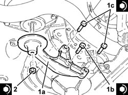
Applies to: engines: 1.9 JTD 8v ; all production periods
1. Refit the gearbox side power unit rear rigid support reinforcement (1a) in its seating and secure by tightening the bolts (1b) and (1c) to the specified torque.
| Fastening | Component | Ø | Value (daNm) |
|---|---|---|---|---|
1b | Bolt | POWER UNIT RIGID REAR SUPPORT REINFORCEMENT ROD.... | M10 | (Crankcase side) 4.5 - 5.5 |
| Fastening | Component | Ø | Value (daNm) |
|---|---|---|---|---|
1c | Nut | POWER UNIT RIGID REAR SUPPORT REINFORCEMENT ROD.... | M12 | (Flexible mounting side) 7.9 - 9.7 |
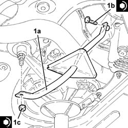
Applies to: engines: 1.9 JTD 8v ; all production periods
Remove the hydraulic jack from under the manual gearbox differential.
Remove the car from the ramp.
Applies to: engines: 2.4 JTD 10v; all production periods
Removing
Refitting1076B50 exhaust pipe attachment to engine - r + r .
Position a hydraulic jack under the gearbox.
1. Undo the bolts fixing the rigid power unit support to the gearbox.
2. Recover the exhaust pipe rigid support.
3. Undo the bolt (3a) and remove the rigid rear support for the power unit (3b).
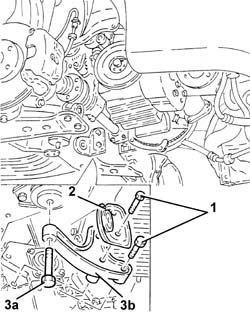
Applies to: engines: 2.4 JTD 10v; all production periods
Refitting
RemovingFit the rigid rear support for the power unit and fix it to the flexible mounting using the bolt.
Fix the rigid rear support for the power unit and the rigid support for the exhaust pipe to the gearbox tightening the bolts to the recommended torque.
| Fastening | Component | Ø | Value (daNm) |
|---|---|---|---|---|
- | Bolt | POWER UNIT RIGID REAR MOUNT | M12 | (Gearbox side) 7.5 ÷ 9.2 |
| Fastening | Component | Ø | Value (daNm) |
|---|---|---|---|---|
- | Bolt | POWER UNIT RIGID REAR MOUNT | M16 | Gearbox side 10.2 - 12.6 |
Remove the hydraulic jack from under the gearbox.
Applies to: engines: 1.9 JTD 16v; all production periods
Removing
RefittingPosition the vehicle on the ramp.
Proceed with removal 7055B54 under-engine guard - r r .
1. Position a hydraulic jack under the gearbox.
2. Undo the nut (2a) and the bolt (2b) and remove the power unit rigid rear support reinforcement (2c).
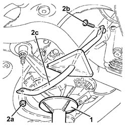
Applies to: engines: 1.9 JTD 16v; all production periods
1. Undo the nut fixing the rear power unit rigid support to the flexible mounting.
2. Undo the bolts (2a) and remove the power unit rear support (2b).
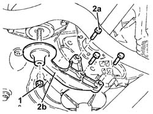
Applies to: engines: 1.9 JTD 16v; all production periods
Refitting
Removing1. Refit the gearbox side power unit rear rigid support (1a) in its seating and tighten the bolts (1b) and (1c) to the specified torque.
| Fastening | Component | Ø | Value (daNm) |
|---|---|---|---|---|
1b | - | - | - | - |
| Fastening | Component | Ø | Value (daNm) |
|---|---|---|---|---|
1c | - | - | - | - |
2. Tighten the nut securing the rear power unit rigid support to the flexible mounting to the recommended torque.
| Fastening | Component | Ø | Value (daNm) |
|---|---|---|---|---|
2 | - | - | - | - |
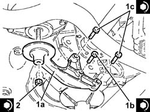
Applies to: engines: 1.9 JTD 16v; all production periods
1. Refit the gearbox side power unit rear rigid support reinforcement (1a) in its seating and secure by tightening the bolts (1b) and (1c) to the specified torque.
| Fastening | Component | Ø | Value (daNm) |
|---|---|---|---|---|
1b | - | - | - | - |
| Fastening | Component | Ø | Value (daNm) |
|---|---|---|---|---|
1c | - | - | - | - |
2. Remove the hydraulic jack from under the gearbox.
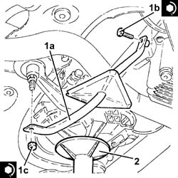
Applies to: engines: 1.9 JTD 16v; all production periods
Proceed with refitting 7055B54 under-engine guard - r r .
Remove the car from the ramps.
Applies to: engines: 2.4 JTD 20v; all production periods
Removing
RefittingPosition the vehicle on the ramp.
Proceed with removal 7055B54 under-engine guard - r r .
Proceed with removal 1076B70 exhaust pipe between pre-catalytic converter and catalytic converter - r r .
1. Position a hydraulic jack under the gearbox.
2. Undo the bolt fixing the rear power unit rigid support to the flexible mounting.
3. Undo the bolts (3a) and remove the rear support for the power unit (3b).
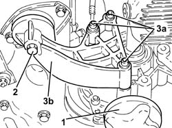
Applies to: engines: 2.4 JTD 20v; all production periods
Refitting
Removing1. Refit the gearbox side power unit rear rigid support (1a) in its seating and tighten the bolts (1b) to the specified torque.
| Fastening | Component | Ø | Value (daNm) |
|---|---|---|---|---|
1b | Bolt | POWER UNIT RIGID REAR MOUNT | M12 | (Manual gearbox/differential side) 7.7 ÷ 9.4 |
2. Tighten the bolt securing the rigid rear power unit support to the flexible mounting to the recommended torque.
| Fastening | Component | Ø | Value (daNm) |
|---|---|---|---|---|
2 | - | - | - | - |
3. Remove the hydraulic jack from under the gearbox.
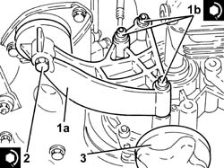
Applies to: engines: 2.4 JTD 20v; all production periods
Proceed with refitting 1076B70 exhaust pipe between pre-catalytic converter and catalytic converter - r r .
Proceed with refitting 7055B54 under-engine guard - r r .
Remove the car from the ramps.
Topics linked from this page (15)
- 1016A40 ignition coil cover on cylinder head- r+r
- 1072C44 exhaust manifold heat shield on bulkhead - r+r
- 1076A32 exhaust rigid mount - r r
- 1076A48 catalytic converter heat shield - r r
- 1076B50 exhaust pipe attachment to engine - r + r
- 1076B52 exhaust pipe (one) leaving l/h or r/h exhaust manifold - r + r
- 1076B70 exhaust pipe between pre-catalytic converter and catalytic converter - r r
- 1080B40 catalytic pre-converter - r r
- 1080B62 catalytic converter - r + r
- 4450B04 right front wheel r r
- 5040A10 Air conditioning refrigerant CIRCUIT - Draining and Refilling
- 5040A20 air conditioner compressor - r+r - includes fluid level check and top up if necessary
- 5040A26 compressor mount - r r
- 7055B54 under-engine guard - r r
- A1B Battery ( BATTERY NEGATIVE )
Topics that link to this page (24)
- 1004B10 power unit with manual gearbox - r + r
- 1004B12 power unit with manual gearbox - r+r for versions with a/c
- 1008B20 power unit intermediate mount flexible block - replace
- 1020A20 crank case oil sump - r + r clean seals for sealant application
- 1020D10 front crank shaft oil seal cover - r + r and replace seals with timing belt removed
- 1020D26 flywheel side oil seal cover - r+r
- 1020D36 flywheel end oil seal - replace for manual gearbox with hydraulic selection versions
- 1024B10 engine flywheel - r + r for versions with manual gearbox
- 1024B11 engine flywheel - r r for manual gearbox with hydraulic selection versions
- 1028H10 connecting rod and piston set - r r
- 1084B26 emgine oil intake duct - r r
- 1810A20 clutch - r + r
- 1810A28 clutch - r r for manual gearbox with hydraulic selection versions
- 1820A24 thrust bearing linkage - r + r
- 2110A10 manual gearbox and differential - r + r
- 2110A11 manual gearbox with differential - r r for versions with hydraulic selection
- 2110C22 gear input shaft seals - r r
- 2110C24 seals for gearbox input shaft - r r for manual gearbox with hydraulic selection versions
- 2110D63 rh differential shaft oil seal - r r
- 4130A10 power steering box - r+r - check tow-in if necessary separately - includes bleeding
- 4130A13 POWER ASSISTED STEERING BOX - R.R. - If necessary. check wheel toe in separately - Includes. bleeding air - on right hand drive versions
- 4130B40 outlet pipe from pump to power steering case r r
- 4410C10 front suspension stabilizer bar - r+r - check wheel geometry separately
- 4410D13 front suspension beam - r r